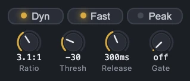
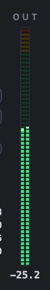

The order
After the model, and after Speed if Speed is set, the sound goes through these stages in this order:
- De-click redraws the few-sample bursts a unit pushed hard can make the model write.
- Auto level keeps the loudness steady while the controls move.
- The effect chain, up to eight.
- Dynamics: a compressor and a gate.
- Width and Spread on the stereo field.
- Low-pass, limiter and volume.
Bypass skips everything after De-click except the volume, so you hear the model as it wrote the sound. Every stage works in fixed steps counted from the start of the sound, so it gives the same output whatever block size the sound card asks for, and a saved sound rendered offline matches what was heard. Each play starts the output section from silence, its settings kept: no reverb tail or level carries over from the last take.

De-click
Some settings make the model itself write clicks: bursts a few samples long that swing up and down, sometimes to full scale, and sound like a bad splice. Neuron pushed hard at one block does it, and so does Quantise at 6 bits (85 a minute on the Warm drone, none at 8). The engine logs the sound card's underflows and any jump between the blocks it sends, and neither appears when these happen, so they are in the model's output, not the playback.
De-click finds samples that jump more than six times the sound's mean step above the line through their neighbours and reverse from one sample to the next, and redraws each burst as a straight line between the good samples either side. It looks 64 samples (1.3 ms) ahead, so the output is that much late. With Neuron at ×14.45 on block 3, the steps heard above half the peak fell from 27 to 2; on clean techno, jazz and gamelan it touched 3 to 12 places in 45 seconds. It is on by default, with a switch on the Output panel, and the same stage can be placed anywhere in the effect chain.
A burst, drawn. The waveform is drawn, not recorded; the burst's shape is the kind the engine logs.
Auto level
Auto level keeps the loudness steady while the controls move, so that a move is heard as a change of sound more than a change of level. It follows the sound's power with a 1.5 s time constant (0.3 s to a rise) and sets a gain toward −20 dBFS RMS, from −12 to +18 dB, ramped in 10 ms steps. Below −60 dBFS it holds its gain, so silence is not raised. It also evens out the music's own slow swells; switch Level off to keep them. The AUTO row on the Output panel shows its gain.
Dynamics
Dynamics is a compressor and a gate, as on a console's channel strip, after the effects and off by default. The compressor turns down what goes over the Threshold (−40 to 0 dBFS) by the Ratio (1:1 to 20:1); its attack is 30 ms, or 3 ms with Fast, and its Release runs from 0.05 to 4 s. It reads the RMS level, or the peak with Peak. The Gate closes by 40 dB when the level falls below its threshold (−80 to −20 dBFS; at the bottom it is off). Both work in 1 ms steps counted from the start.
The COMP and GATE rows light their reduction on LEDs; the AUTO and LIMIT rows show auto level's gain and the limiter's pull on the peak.


The curve is the stage's own; the level moving along it is drawn. The dashed line is no change.
Width and Spread
Width and Spread are on the Engine panel, beside the stereo field that shows what they do, and act here, after Dynamics. The sound is split into mid (left plus right) and side (left minus right). Width scales the side: 0% is mono, 100% the stereo the model wrote, 200% twice as wide. Spread makes width from a mono sound: it adds the mid, delayed 12 ms, to the left and takes it from the right. Twelve milliseconds is inside the window where the ear hears one sound rather than an echo, and the mono sum stays the mid, so nothing is lost when the sound is played in mono.
Low-pass, limiter and volume
The Low-pass is a one-pole filter from 500 Hz to 16 kHz, gentle enough to darken a sound without a resonance. The Limiter is a soft curve, tanh(1.5x) scaled back to unity at full scale, which rounds peaks rather than cutting them; the LIMIT row shows how far it pulls the peak down. Volume comes last. The OUT meter lights in cells, green, amber from −6 dB and red from −1 dB, with a hold line at each channel's peak, and shows the level as it goes to the sound card.

Dropouts
The model writes ahead of the sound card by the Buffer's number of frames (see Frame by frame). If a step runs long and the card asks for sound that is not there, the output section covers the gap. The last block the card played goes on, mirrored so that it starts where the sound stopped (played backwards, then forwards), and fades out over 30 ms; when sound arrives it crossfades back in over 5 ms. A dropout is heard as a short dip, without a click. Only what is heard is covered: a saved sound is taken from the frames the model wrote, so a dropout heard live is not in it.
A dropout, drawn with the cover's own times: the 30 ms fade and the 5 ms crossfade.